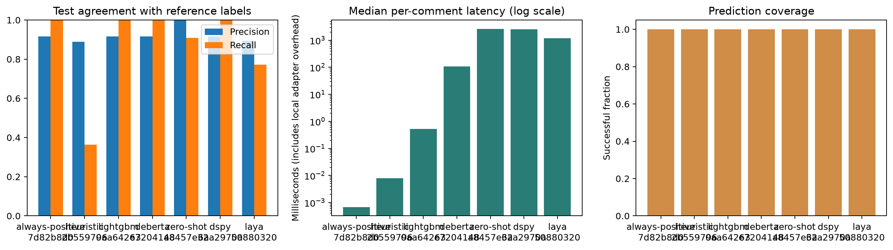

These runs share identical test inputs, labels and target scope. Scores use the saved reference labels. For the PoC these labels were assigned by Codex. Inspect class counts and failed predictions alongside scores.

| Run | Precision | Recall | Coverage | Scored |
|---|---|---|---|---|
| 20261018T020115581699Z-always-positive-7d82b8d0 | 0.9166666666666666 | 1.0 | 1.0 | 24 |
| 20261018T020116247155Z-heuristic-2b559796 | 0.8888888888888888 | 0.36363636363636365 | 1.0 | 24 |
| 20261018T020116761071Z-lightgbm-0aa64263 | 0.9166666666666666 | 1.0 | 1.0 | 24 |
| 20261018T020117295250Z-deberta-e7204148 | 0.9166666666666666 | 1.0 | 1.0 | 24 |
| 20261018T020226238543Z-zero-shot-a8457e32 | 1.0 | 0.9090909090909091 | 1.0 | 24 |
| 20261018T020744606237Z-dspy-6aa2970a | 0.9166666666666666 | 1.0 | 1.0 | 24 |
| 20261018T020645080465Z-laya-50880320 | 0.8947368421052632 | 0.7727272727272727 | 1.0 | 24 |